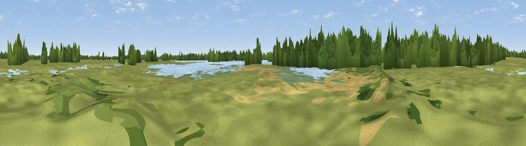

Viewpoint near Holywell
#43950 in England · top 61% of its area beats it · near HolywellThe view, rendered

A 360° render of this exact spot computed from the terrain model, tree cover and land cover — summer colours, afternoon light, calibrated against photographs of famous viewpoints. Real trees, hedges and buildings will differ in detail.
The panorama
Grey silhouette: terrain skyline in each direction (720 bearings, Earth curvature and refraction included). Dashed green: skyline with trees (+15 m) and buildings (+8 m) as obstacles. Blue strip: how far the ground is visible on each bearing.
Where the view opens
Wedge length = distance to the farthest visible ground on that bearing (vegetation-aware). Rings at 10, 25 and 50 km.
What fills the view
38% grassland · 25% water · 18% woodland · 17% cropland · 2% built-up
Angular shares of the visible panorama (visual magnitude), not map area. Landscape diversity 0.61 (0–1 Shannon).
Key numbers
More beautiful places nearby
The staircase of upgrades: each row has a higher view potential than everything closer. Driving times are estimates from straight-line distance, calibrated against real road routing — check an actual route before setting out.
| Place | Direction | Drive | Score |
|---|---|---|---|
| Viewpoint near Holywell | SE · 0 km | ~1 min | 25.8 |
| Bird lookout | SSW · 1 km | ~3 min | 26.1 |
| Bird lookout | ENE · 4 km | ~9 min | 26.6 |
| Crow Hill | SSW · 12 km | ~22 min | 34.5 |
| Viewpoint near Brampton | W · 13 km | ~24 min | 35.9 |
| Viewpoint near Coton | SSE · 15 km | ~26 min | 41.8 |
| Orwell Hill | S · 19 km | ~33 min | 43.0 |
| Viewpoint near Harlton | SSE · 19 km | ~33 min | 49.6 |
52.31522, -0.02911 · source: osm viewpoint · position refined by local search. Computed location — check access rights before visiting.